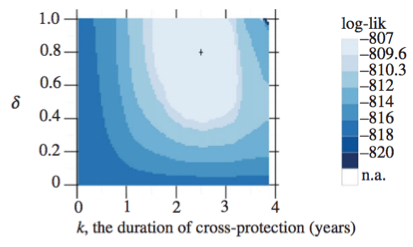
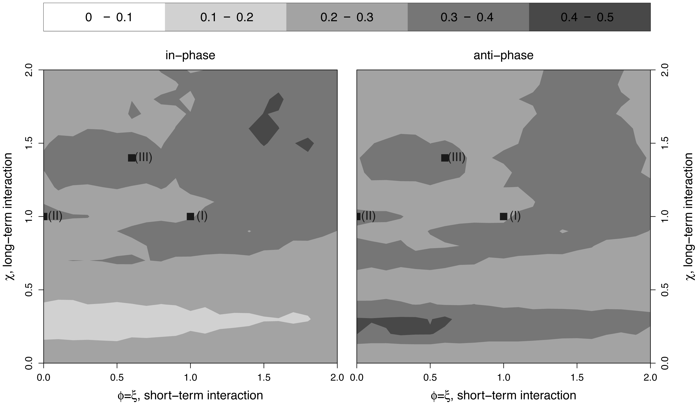
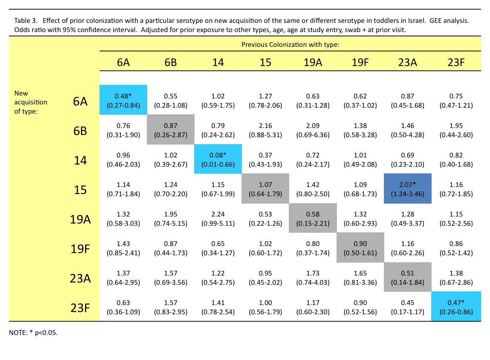
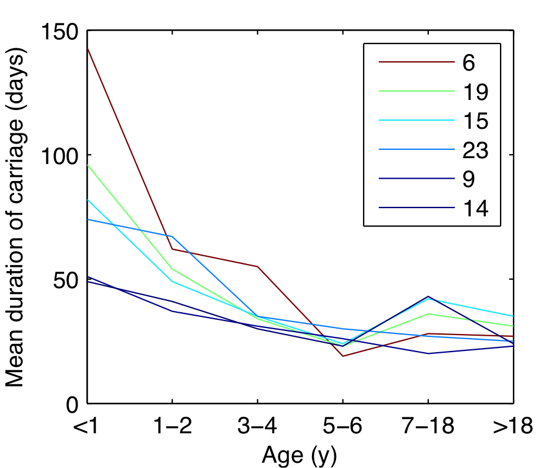
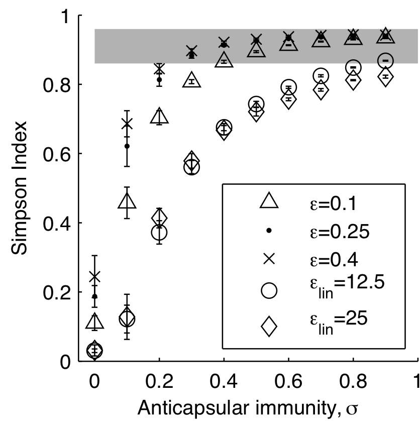
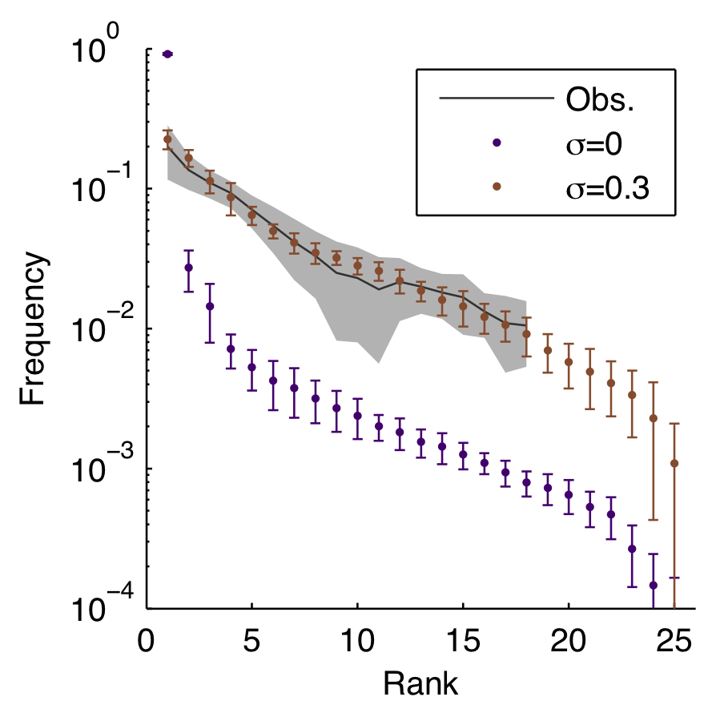

Fitting mechanistic models
Maximum likelihood
Parameter values that make the observed data most likely
Notation
Observed variable $D$ depends on unknown parameter $\theta$
Probability density function of $D$ is $f_{\theta}$
$$L_d(\theta)=f_{\theta}(d)$$
What's $D$?
Case counts at different times
or infection times with different strains at different times
or some composite of observations
Maximizing the likelihood
means maximizing the log-likelihood
or minimizing the negative log-likelihood
Finding the MLE
Can be analytically tractable
For our models, it's not
Likelihood optimization
Brute force
Derivative-based methods
Simplex
Simulated annealing (Metropolis algorithm)
Sequential Monte Carlo
Many others... but for us, few tried and true
Likelihood profiles
Hold parameter(s) constant, fit the rest 
Interacting dengue serotypes

Bayesian approaches
Assume prior expectations about our parameters, $p(\theta)$
$$p(\theta\rvert D) \propto p(D\rvert\theta)p(\theta)$$
where $p(D\rvert\theta)$ is the likelihood
and $p(\theta\rvert D)$ is the posterior density
Bayesian optimization
Markov Chain Monte Carlo
Metropolis-Hastings MCMC
Particle MCMC
Hybrid/Hamiltonian Monte Carlo
Many others
Introduction to MCMC
Example with hybrid Monte Carlo
Data: Infection times and covariates $\theta$ for >4000 people
Model: Force of infection $\lambda_i=\sigma\beta I$ with $\beta=f(\beta_i,\theta)$
Probes and arbitrary metrics
Approximate Bayesian Computation
Time-series probes
Phases insufficient to infer interaction
Challenges fitting multistrain models
Many parameters
Multiple minima
Noise, nonstationarity, etc.
When should we trust a model?
Model "validation"
Confirm convergence
AIC and WAIC
Leave-one-out cross-validation
Out-of-sample prediction
Replicate on simulated data
Gauge the power of your data

Tips and tricks
Predict something else
Natural and unnatural disturbances
Streptococcus pneumoniae
Carried by 20-80% of young children
Transmitted mostly between healthy carriers
>90 serotypes
Some serotypes seem better at everything
Little evidence for anticapsular immunity
Non-serotype-specific immunity
Fitted duration of carriage

Approach
For each value of serotype-specific immunity, $\sigma$
Fit the transmission rate to obtain 40% prevalence in kids
(Later, sensitivity analysis on fixed parameters)
Model reproduces diversity
...including rank-frequency
Other matched patterns
Increase in serotype diversity with age
Stable rank order
Decrease in carriage duration with age
Frequency of co-colonizations
Epidemics of rarer serotypes
Vaccinations as natural experiments